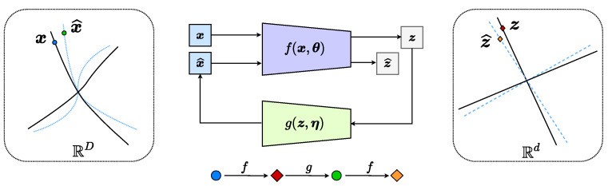
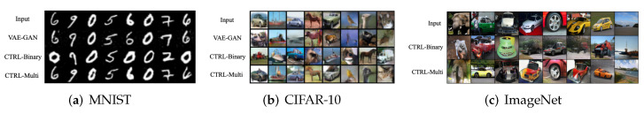
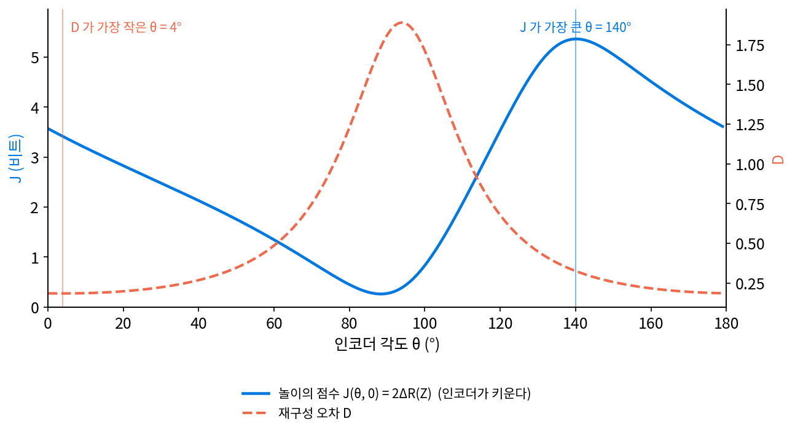
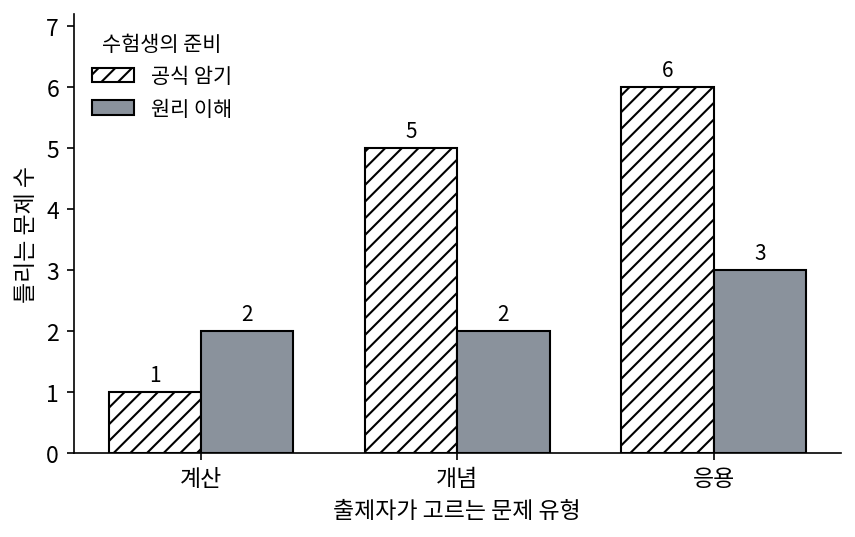
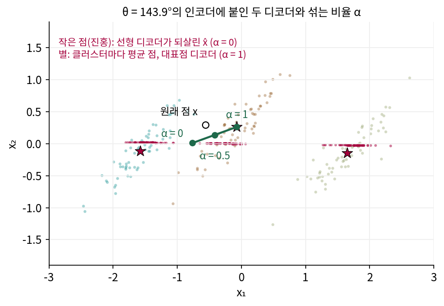
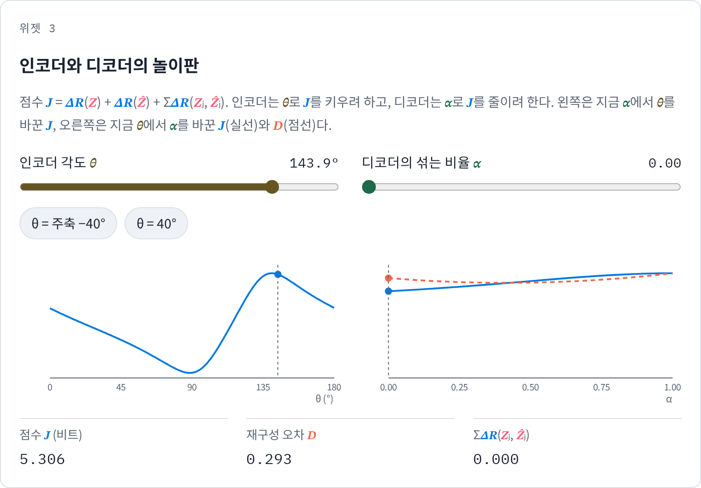
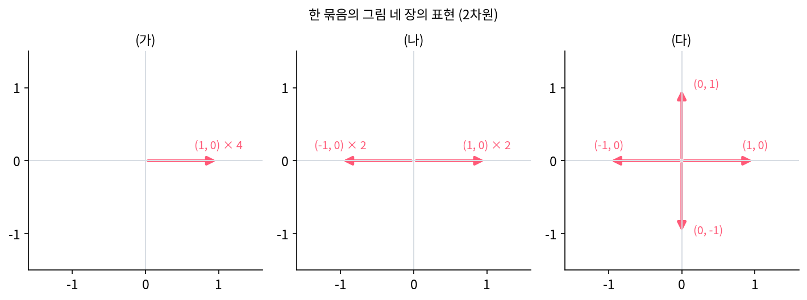

오토인코더와 클로즈드 루프: 되살린 것을 다시 압축하기
클로즈드 루프 전사: 인코더와 디코더가 코딩 레이트를 두고 겨룬다
자기 일관은 되살린 것을 같은 인코더로 다시 읽는데, 그 인코더가 무딘 눈이라면 어떨까? 클러스터가 섞인 각도의 인코더나, 줄무늬를 보지 못하는 인코더는 디코더가 엉뚱한 것을 그려도 같은 코드로 읽어 줄 수 있다. 검사관이 디코더와 한편이 되면 검사가 아니다. 인코더가 일부러 원래 자료와 되살린 것의 차이를 찾아내려 애쓰고, 디코더는 그 눈을 속일 수 없을 만큼 잘 그리려 애쓰게 할 수는 없을까?
역사: 옮겨 적기를 두 사람의 놀이로
2021년 11월 연구자 열한 명이 arXiv 에 올린 논문은 이듬해 3월 《엔트로피》 24권 4호에 「CTRL: Closed-Loop Transcription to an LDR via Minimaxing Rate Reduction」이라는 제목으로 실렸다. 열한 명은 다이시리, 퉁성방(Shengbang Tong), 리밍양(Mingyang Li), 우쯔양(Ziyang Wu), 프센카(Michael Psenka), 찬(Kwan Ho Ryan Chan), 자이펑위안(Pengyuan Zhai), 위야오둥(Yaodong Yu), 위안샤오쥔(Xiaojun Yuan), 선(Heung-Yeung Shum), 마이(Yi Ma)다. 전사(transcription)는 자료를 코드로 옮겨 적는다는 뜻이고, LDR 은 클러스터마다 서로 독립인 선형 부분공간을 차지하는 표현(linear discriminative representation)이다. 같은 연구실이 앞서 내놓은 코딩 레이트 감소(MCR²)는 라벨이 있는 자료를 그런 표현으로 옮기는 인코더를 배웠지만, 옮기는 방향이 자료에서 표현으로 가는 한쪽뿐이었다(논문의 말로 「one-sided」). 그 표현에서 자료를 되살리는 디코더는 그 목표에 들어 있지 않았다.
그들의 답은 인코더와 디코더를, 코딩 레이트 감소로 점수를 매기는 한 판의 놀이에 올리는 것이었다. 인코더는 원래 자료와 옮겨 적었다 되살린 것의 차이를 키우려 하고, 디코더는 원래 자료와 되살린 것의 차이를 줄이려 한다.

논문은 MNIST, CIFAR-10, STL-10, CelebA, LSUN 침실, ImageNet 에서 실험했고, 디코더가 만든 그림의 질과 인코더의 분류 성능이 GAN, VAE, 그리고 GAN 과 VAE 를 섞은 방법들과 맞먹거나 더 낫다고 보고했다.

이 책의 참고서인 부캐넌·파이·왕·마의 『Principles and Practice of Deep Representation Learning』도 「Consistent and Self-Consistent Representations」라는 한 장에서 이런 자기 일관 표현과 클로즈드 루프를 다룬다.

코딩 레이트 감소에 디코더를 하나 붙이고 재구성 손실을 더하면 끝나는 거 아니에요? 왜 놀이까지 만들어요?

그 재구성 손실은 어디서 재죠?

자료 공간에서요… 아, 그러면 다시 화소 거리로 돌아가네요.

코드 공간에서 재면 되잖아. 되살린 걸 인코더에 다시 넣어서. 그런데 그러면 검사하는 인코더가 디코더 편을 들어 줄 수도 있겠네.

그 걱정 때문에 BiGAN·ALI 같은 방법은 그림과 특징을 가리는 판별기 신경망을 따로 두었어요. 신경망이 하나 더 늘고, 자료 공간에서 두 분포가 얼마나 다른지를 그 판별기에게 맡기는 거예요.

자료 공간에서는 분포 사이의 거리를 얻기 어렵다고 했죠. 그런데 코드 공간에는 ΔR이라는 잣대가 이미 있었고요.

그 잣대를 같은 연구실이 코딩 레이트 감소로 먼저 만들어 두었기에, 따로 판별기를 두지 않고 인코더 자신에게 검사관 노릇을 맡길 수 있었어요.

인코더는 차이를 키우고 디코더는 줄이려고 하면, 둘은 결국 어디서 멈춰요?
장난감에서 놀이를 해 보면
논문의 점수를 이 장의 장난감(길쭉한 덩어리 셋으로 된 점 180개, 덩어리마다 한 클러스터, 코드는 수 하나)에 옮기면 다음과 같다. 점수의 짜임은 논문과 같고, 코딩 레이트만 수 하나짜리 코드에 맞춘 이 장의 꼴(클러스터의 가운데에서 잰 분산)을 쓴다. 인코더는 각도 θ로 점수를 키우고, 디코더는 섞는 비율 α(알파)로 점수를 줄인다. α = 0은 선형 디코더, α = 1은 대표점 디코더이고, 그 사이는 두 디코더가 그린 점을 α 대 1 − α 의 비율로 섞는다.
디코더가 선형 디코더(α = 0)를 쓰면 자기 일관이 지켜져서 Ẑ = Z이고, 점수는 J = 2ΔR(Z)가 된다. 그러면 인코더는 클러스터가 가장 잘 갈리는 각도를 찾게 된다. 0°에서 180°까지 1° 눈금으로 재면 그 각도는 θ = 140°이고, 점수는 5.363비트, 재구성 오차는 0.325다. 재구성 오차만 보는 인코더라면 주축 θ = 3.9°(재구성 오차 0.184, ΔR 1.707비트)를 골랐을 것이다. 놀이에 올린 인코더는 되살리기를 조금 양보하고 클러스터가 갈리는 코드를 고른다.

디코더 쪽에서는 무엇이 일어날까? 디코더가 대표점을 섞으면 다시 얻은 코드가 클러스터마다 오그라들어 처음 코드와 달라지고, 인코더는 처음 코드와 다시 얻은 코드의 차이를 점수로 받아 간다. 디코더가 점수를 줄이려면 다시 얻은 코드를 처음 코드와 같게 만들어야 한다. 디코더가 실제로 어느 α를 고르는지, 재구성 오차로 고를 때와 무엇이 다른지는 아래 문제 8에서 위젯 3으로 따져 본다. 이렇게 인코더와 디코더가 코드 공간의 코딩 레이트 감소를 점수로 겨루며 옮겨 적기와 되살리기를 함께 배우는 방법을 클로즈드 루프 전사 (코딩 레이트를 두고 겨루며 옮겨 적고 되살리기, closed-loop transcription)라 한다.
점 180개 장난감의 놀이는 인코더의 선택지가 각도 하나, 디코더의 선택지가 섞는 비율 하나뿐이어서 쉽게 끝난다. 깊은 신경망 둘을 겨루게 하면 GAN 처럼 학습이 흔들릴 수 있고, 논문의 실험이 보인 것은 그 놀이를 실제로 돌려 쓸 만한 결과를 얻었다는 데까지다. 장난감 놀이가 보여 주는 것은 점수의 짜임, 곧 무엇을 키우고 무엇을 줄이게 되어 있는가이다.
ML에서: 표현이 한 점으로 무너지는 문제
라벨 없이 표현을 배우는 자기 지도 학습에서는 같은 그림을 두 번 다르게 자르거나 색을 바꾼 두 장(두 시점)의 표현이 가까워지도록 학습한다. 이 목표만 두면 모든 그림을 같은 표현 하나로 보내 두 시점의 거리를 언제나 0으로 만드는 쉬운 답이 있는데, 이렇게 모든 표현이 하나로 모이는 것을 표현의 무너짐(collapse)이라 한다. 2021년 바르데스(Adrien Bardes)·퐁스(Jean Ponce)·르쿤(Yann LeCun)의 VICReg 는 표현의 칸마다 분산이 일정 값 아래로 내려가지 않게 하는 항과 칸끼리의 공분산을 줄이는 항을 더해 이를 막았다. 2023년 퉁·천위베이(Yubei Chen)·마·르쿤의 EMP-SSL 은 같은 자리에 코딩 레이트 R(Z) = ½ log₂ det(I + d/(bε²) ZZᵀ)를 키우는 항(총 코딩 레이트)을 넣고(d 는 표현의 칸 수, b 는 한 묶음의 그림 수, ε 는 허용 오차, Z 는 표현을 열로 늘어놓은 행렬, I 는 단위 행렬. 논문은 로그의 밑을 적지 않았고, 이 책은 비트로 세려고 밑을 2로 적는다), 이것을 VICReg 공분산 항의 부드러운 판으로 볼 수 있다고 적었다. 코딩 레이트는 표현들이 여러 방향으로 퍼질수록 크다. 클로즈드 루프 놀이의 ΔR(Z)가 코드의 클러스터를 서로 떼어 놓듯, 이 항은 표현 전체가 한 점이나 한 직선으로 오그라들지 못하게 붙든다.
문제 7. 출제자와 수험생
출제자는 문제 유형(계산·개념·응용)을 하나 고르고, 수험생은 준비 방법(공식 암기·원리 이해)을 하나 고른다. 출제자는 수험생이 틀리는 문제 수를 키우고 싶고 수험생은 줄이고 싶은데, 틀리는 문제 수는 아래와 같다.
계산 개념 응용 공식 암기 1 5 6 원리 이해 2 2 3 (가) 수험생이 출제자가 무엇을 고를지 모른 채 먼저 정해야 한다면 무엇을 골라야 하는가? (나) 출제자가 수험생의 준비를 보고 나서 고른다면? (다) 두 답에서 틀리는 수는 같은가?

공식 암기가 계산에서 1개만 틀리니까 제일 좋은 칸이 거기 있어요. 공식 암기요.
출제자가 민준 학생이 공식만 외운 걸 안다면 무엇을 낼까요?
응용이요. 그럼 6개 틀려요. 제일 좋은 칸만 보면 안 되네요.
수험생은 줄마다 최악을 봐야 해. 공식 암기는 최악이 6, 원리 이해는 최악이 3. 그러니까 원리 이해를 골라서 많아야 3개 틀리는 거야.
거꾸로 출제자가 먼저 정해야 한다면, 출제자는 표에서 무엇을 볼까요?
출제자는… 문제 유형마다 수험생이 가장 잘 막는 경우를 보겠네요. 칸마다 작은 쪽이 1, 2, 3이니까, 응용을 내면 적어도 3개는 틀리게 할 수 있어요.

어, 수험생 쪽도 3, 출제자 쪽도 3이네.

출제자는 응용, 수험생은 원리 이해에서 서로 더 바꿀 게 없어.
그래요. 이런 칸을 안장점이라 해요. 출제자가 차이를 찾아내려 애쓸수록 수험생은 요령으로는 못 버티고, 결국 원리 이해로 밀려나요. 클로즈드 루프 놀이에서도 인코더가 차이를 찾아내려 애쓰면, 디코더는 대표점을 섞는 요령으로 버티지 못하고 자기 일관을 지키는 선형 디코더로 밀려나요.

대전 게임에서 필살기 하나만 연습해 가면 상대가 그것만 막아 버리잖아요. 결국 기본기를 익힌 쪽이 제일 덜 지는 거네요.
문제 8. 디코더는 무엇을 고르나
본문의 장난감에서 인코더 각도를 θ = 143.9°에 두었다. 디코더가 섞는 비율 α를 0, 0.1, 0.2, …, 1로 바꾸면 재구성 오차 D, 클러스터마다 처음 코드와 다시 얻은 코드의 차이의 합 ΣΔR(Zⱼ, Ẑⱼ), 점수 J가 아래와 같다.
α 0 0.1 0.2 0.3 0.4 0.5 0.75 1 D 0.293 0.287 0.283 0.280 0.279 0.280 0.288 0.307 ΣΔR(Zⱼ, Ẑⱼ) 0 0.005 0.020 0.047 0.083 0.129 0.254 0.316 J 5.306 5.406 5.520 5.647 5.784 5.927 6.259 6.407 (가) 재구성 오차로 고르는 디코더(오픈 루프)와 점수 J로 고르는 디코더(클로즈드 루프)는 각각 어느 α를 고르는가? (나) 위젯 3에서 θ = 40°로 바꾸면 J로 고르는 디코더의 답이 어떻게 되는가? 그런데도 인코더는 왜 이 각도를 고르지 않는가?

(가)는 D 가 제일 작은 0.4요, 0.279. J 는 α = 0이 제일 작아요. 둘이 다르네요.
재구성 오차로 고르면 선형 디코더보다 대표점을 40% 섞은 디코더가 낫다는 말이에요. 이 디코더를 고르면 무엇을 잃죠?
ΣΔR 이 0.083이니까 자기 일관이 조금 깨져요. 다시 얻은 코드가 클러스터마다 조금씩 오그라든 거예요. 재구성 오차는 덩어리 안의 점들을 가운데로 조금 당기면 오히려 줄어드나 봐요. 평균 쪽으로 당기면 손해가 적으니까요.
흐릿한 평균 그림이 화소 오차를 작게 받는 것도 점들을 가운데로 당기기 때문이네. (나)는 위젯에서 θ = 40°로 바꿔 보면, J 를 가장 작게 하는 α 가 1이야.

그럼 클로즈드 루프로 골라도 대표점 디코더가 이기는 거잖아. 클로즈드 루프도 무너진 디코더를 뽑을 수 있는 거야?
θ = 40°는 어떤 각도였죠?
클러스터가 섞이는 각도예요. 맞힘이 79.4%였어요.
클러스터가 섞인 코드를 받으면, 대표점 디코더는 점을 어디로 보내죠?

섞여 있으니까 꽤 많은 점을 엉뚱한 클러스터의 평균으로 보내겠네요. 아, 그게 다시 얻은 코드의 ΔR(Ẑ)를 오히려 줄이는 거예요.
그 각도에서 J 는 얼마나 되나요?
위젯에 2.1비트 남짓으로 나와요. θ = 140°는 5.363비트였고요.
훨씬 작네. 인코더는 J 를 키우려고 하니까 이런 각도에 머물지 않겠어. 디코더 쪽 대답만 보고 「클로즈드 루프도 무너진다」고 한 건 놀이의 반쪽만 본 거였어.
그래요. 놀이는 두 쪽을 함께 봐야 해요. 스크립트로 1° 눈금 모든 각도를 보면 디코더가 α = 0을 고르지 않는 각도는 37°에서 48° 사이의 일곱 곳뿐이고, 인코더가 J 를 가장 크게 하는 θ = 140°에서 디코더의 답은 α = 0이에요. 「디코더의 가장 좋은 대답을 본 뒤 인코더가 고른 값」과 「인코더의 가장 좋은 대답을 본 뒤 디코더가 고른 값」이 똑같이 5.363비트로 만나요. 출제자와 수험생의 안장점과 같은 자리예요.

탁구도 그래요. 약한 상대랑만 치면 엉성한 자세로도 이기는데, 센 상대를 만나야 자세를 제대로 고치게 돼요. 인코더가 센 상대 노릇을 하는 거네요.

문제 9. 무너진 표현의 코딩 레이트
자기 지도 학습의 한 묶음에 그림 네 장이 있고, 각 그림의 표현은 2차원 벡터다. 총 코딩 레이트 R = ½ log₂ det(I + d/(bε²) ZZᵀ)(d = 2, b = 4, ε = 0.5, Z 는 표현을 열로 놓은 2 × 4 행렬)를 (가) 네 표현이 모두 (1, 0)일 때 (나) (1, 0), (−1, 0), (1, 0), (−1, 0)일 때 (다) (1, 0), (0, 1), (−1, 0), (0, −1)일 때 구하라. 두 시점의 표현을 가깝게 하는 항만으로 학습하면 어떤 일이 생기고, 이 R 을 키우는 항을 더하면 무엇이 달라지는가?

d/(bε²) = 2/(4 × 0.25) = 2예요. (가)는 ZZᵀ가 대각 (4, 0)이라 det = (1 + 8)(1) = 9, R = ½ log₂ 9 = 1.585비트. (다)는 ZZᵀ가 대각 (2, 2)라 det = 5 × 5 = 25, R = 2.322비트고요.
(나)도 돌려 봤는데 1.585비트예요. (가)랑 똑같이 나와요.
(가)는 네 그림이 모두 같은 표현이고, (나)는 두 가지로 갈렸어요. 그런데 R 이 같아요. 이상하지 않나요?

네, (나)가 더 퍼져 있는데요. 이 R 로는 (가)의 무너짐이 안 잡히는 거예요?

(나)에서 (1, 0)과 (−1, 0)을 ZZᵀ에 넣으면 부호끼리 곱해져서 사라지잖아. 평균을 빼는 단계가 어디에도 없네.
가운데를 빼지 않으면, R 이 실제로 보는 건 무엇일까요?
표현들이 원점에서 어느 방향들로 뻗어 있는지요. (가)와 (나)는 둘 다 가로 방향 하나에만 있어서 같고, (다)는 두 방향을 다 써서 커진 거고요. 그러니까 이 R 을 키우면 표현이 방향 하나로 오그라드는 걸 막는 거예요. 크기를 1로 맞춘 표현들이 모두 같은 점으로 모이는 무너짐도 방향 하나만 쓰는 경우라 R 이 작게 나오고요.
그래요. 두 시점을 가깝게 하는 항만 있으면 (가)가 가장 좋은 답이에요. 거리가 0이니까요. 그 항에 R 을 키우는 항을 더하면, 같은 그림의 두 시점은 가깝게 두면서 다른 그림끼리는 여러 방향으로 흩어 놓아야 점수를 받아요. 클로즈드 루프 놀이의 ΔR(Z)가 클러스터를 서로 떼어 놓았듯, 이 항은 표현들을 여러 방향으로 떼어 놓아요. 다만 라벨 없이요.
넷이 여행 가서 「사진 잘 찍자」만 정하면 넷 다 같은 자리에서 같은 풍경을 찍어 오잖아요. 「서로 겹치지 않게 찍자」는 규칙이 하나 더 있어야 앨범이 넓어지고요. 그 규칙이 R 을 키우는 항이에요.